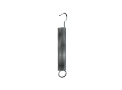
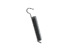
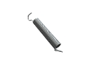

Нестандартные пружины
Изготовление нестандартных пружин на заказ партиями от 1-й штуки от 1-го дня.
Выполним по разнообразным параметрам, чертежам или образцу, фото, эскизу.
(сроки выполнения заказа обговариваются с каждым клиентом индивидуально)
- 
- 
- 
Изготовление и производство нестандартных пружин
Не знаете где заказать и купить нестандартные пружины? Производственная компания ООО «Индустриал Спрингс» предоставляет уникальные услуги по изготовлению сложных и нестандартных пружины на заказ по индивидуальным чертежам, образцам и фото с последующей доставкой по всей территории Украины. Там где большинство производителей не справляются мы делаем уникальные нестандартные пружины, учитывая все нюансы, указанные в техническом задании заказчиком.
Все нестандартные пружины изготавливаются строго по технической документации клиента с точным выполнением всех указанных параметров. В нашем производстве мы используютем высококачественные пружинные сплавы и стали (углеродистые, легированные, специальные теплостойкие и нержавеющие), а также специализированное импортное оборудование.
ООО “Индустриал Спрингс” занимаемся производством изделий из проволоки любых видов, от стандартных до сложнейших образцов. Нестандартные пружины можно заказать и купить у нас по доступным оптовым и розничным ценам. При оформлении заявки на расчет и изготовление нестандартных пружин необходимо проконсультироваться с нашими специалистами, для точного составления технического задания к Вашему заказу, где будут учтены все необходимые параметры. Для заказа свяжитесь с мененджером нашей компании через форму заявки или по одному из телефонов: 066 283 80 82, 097 305 81 85, 0532 591 590.